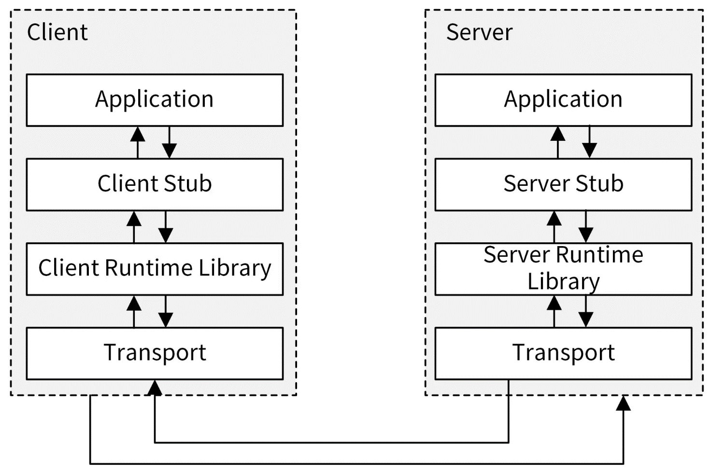

miniblog 使用 gRPC 框架实现了一个 gRPC 服务器。使用 grpc-gateway 框架实现了一个 HTTP 反向代理服务器，用来将 HTTP 请求转化为 gRPC 请求。
RPC 介绍
gRPC 是 RPC 协议的 Go 语言实现，因此在介绍 gRPC 之前，有必要先了解 RPC 协议的基本概念。
根据维基百科的定义，RPC（Remote Procedure Call，远程过程调用）是一种计算机通信协议。该协议允许运行在一台计算机上的程序调用另一台计算机上的子程序，而开发者无需为这种交互编写额外的代码。
通俗来说，RPC 的核心思想是：服务端实现一个函数，客户端通过 RPC 框架提供的接口，可以像调用本地函数一样调用该函数，并获取返回值。RPC 屏蔽了底层的网络通信细节，使开发人员无需关注网络编程的复杂性，从而能够将更多精力投入到业务逻辑的实现中，大幅提升开发效率。
RPC 的调用过程如图

RPC 调用的具体流程如下：
- 客户端通过本地调用的方式调用客户端存根（Client Stub）；
- 客户端存根将参数打包（也称为 Marshalling）成一个消息，并发送该消息；
- 客户端所在的操作系统（OS）将消息发送到服务端；
- 服务端接收到消息后，将消息传递给服务端存根（Server Stub）；
- 服务端存根将消息解包（也称为 Unmarshalling），得到参数；
- 服务端存根调用服务端的子程序（函数），完成处理后，将结果按照相反的步骤返回给客户端。
需要注意的是，Stub 负责处理参数和返回值的序列化（Serialization）、参数的打包与解包，以及网络层的通信。在 RPC 中，客户端的 Stub 通常被称为“Stub”，而服务端的 Stub 通常被称为“Skeleton”。Stub 是存根（代理的意思）。
目前，业界有很多优秀的 RPC 协议，例如腾讯的 Tars、阿里的 Dubbo、微博的 Motan、Facebook 的 Thrift、RPCX 等。但使用最多的还是 gRPC。
gRPC 介绍
gRPC （google Remote Procedure Call）是由谷歌开发的一种高性能、开源且支持多种编程语言的通用 RPC 框架，基于 HTTP/2 协议开发，并默认采用 Protocol Buffers 作为数据序列化协议。gRPC 具有以下特性：
- **语言中立：**支持多种编程语言，例如 Go、Java、C、C++、C#、Node.js、PHP、Python、Ruby 等；
- **基于 IDL 定义服务：**通过 IDL（Interface Definition Language）文件定义服务，并使用 proto3 工具生成指定语言的数据结构、服务端接口以及客户端存根。这种方法能够解耦服务端和客户端，实现客户端与服务端的并行开发；
- **基于 HTTP/2 协议：**通信协议基于标准的 HTTP/2 设计，支持双向流、消息头压缩、单 TCP 的多路复用以及服务端推送等能力；
- **支持 Protocol Buffer 序列化：**Protocol Buffer（简称 Protobuf）是一种与语言无关的高性能序列化框架，可以减少网络传输流量，提高通信效率。此外，Protobuf 语法简单且表达能力强，非常适合用于接口定义。
与许多其他 RPC 框架类似，gRPC 也通过 IDL 语言来定义接口（包括接口名称、传入参数和返回参数等）。在服务端，gRPC 服务实现了预定义的接口。在客户端，gRPC 存根提供了与服务端相同的方法。
Protocol Buffers 介绍
Protocol Buffers（简称 Protobuf）是由谷歌开发的一种用于对数据结构进行序列化的方法，可用于数据通信协议、数据存储格式等，也是一种灵活且高效的数据格式，与 XML 和 JSON 类似。由于 Protobuf 具有出色的传输性能，因此常被用于对数据传输性能要求较高的系统中。Protobuf 的主要特性如下：
- **更快的数据传输速度：**Protobuf 在传输过程中会将数据序列化为二进制格式，相较于 XML 和 JSON 的文本传输格式，这种序列化方式能够显著减少 I/O 操作，从而提升数据传输的速度；
- **跨平台多语言支持：**Protobuf 自带的编译工具 protoc 可以基于 Protobuf 定义文件生成多种语言的客户端或服务端代码，供程序直接调用，因此适用于多语言需求的场景；
- **良好的扩展性和兼容性：**Protobuf 能够在不破坏或影响现有程序的基础上，更新已有的数据结构，提高系统的灵活性；
- **基于 IDL 文件定义服务：**通过 proto3 工具可以生成特定语言的数据结构、服务端和客户端接口。
在 gRPC 框架中，Protocol Buffers 主要有以下四个作用。
**第一，可以用来定义数据结构。**举个例子，下面的代码定义了一个 LoginRequest 数据结构：
// LoginRequest 表示登录请求
message LoginRequest {
// username 表示用户名称
string username = 1;
// password 表示用户密码
string password = 2;
}
**第二，可以用来定义服务接口。**下面的代码定义了一个 MiniBlog 服务：
service MiniBlog {
rpc Login(LoginRequest) returns (LoginResponse) {}
}
第三，可以通过 protobuf 序列化和反序列化，提升传输效率。
使用 XML 或 JSON 编译数据时，虽然数据文本格式可读性更高，但在进行数据交换时，设备需要耗费大量的 CPU 资源进行 I/O 操作，从而影响整体传输速率。而 Protocol Buffers 不同于前者，它会将字符串序列化为二进制数据后再进行传输。这种二进制格式的字节数比 JSON 或 XML 少得多，因此传输速率更高。
**第四，Protobuf 是标准化的。**我们可以基于标准的 Protobuf 文件生成多种编程语言的客户端、服务端代码。在 Go 项目开发中，可以基于这种标准化的语言开发多种 protoc 编译插件，从而大大提高开发效率。
miniblog 实现 gRPC 服务器
为了展示如何实现一个 gRPC 服务器，并展示如何通信，miniblog 模拟了一个场景：miniblog 配套一个运营系统，运营系统需要通过接口获取所有的用户，进行注册用户统计。为了提高内部接口通信的性能，运营系统通过 gRPC 接口访问 miniblog 的 API 接口。为此，miniblog 需要实现一个 gRPC 服务器。那么如何实现一个 gRPC 服务器呢？其实很简单，可以通过以下几步来实现：
- 定义 gRPC 服务；
- 生成客户端和服务器代码；
- 实现 gRPC 服务端；
- 实现 gRPC 客户端；
- 测试 gRPC 服务。
grpc-go 官方仓库中提供了许多代码实现供参考，例如 examples 目录。gRPC 官方文档也包含了大量 gRPC 框架的使用教程。建议在学习后续内容之前，先根据官方的 Quick start 文档完成一次 gRPC 服务的创建和使用流程，这将有助于你更好地理解后续内容。
（1）定义 gRPC 服务
我们需要编写.proto 格式的 Protobuf 文件来描述一个 gRPC 服务。服务内容包括以下部分：
**服务定义：**描述服务包含的 API 接口；
**请求和返回参数的定义：**服务定义了一系列 API 接口，每个 API 接口都需要指定请求参数和返回参数。
提示：
考虑到课程中不适合展示很大的代码段，下文所示的 Protobuf 文件只展示了一部分代码。Protobuf 文件的完整代码见 miniblog 项目 feature/s09 分支 pkg/api/apiserver/v1/ 目录中的同名文件。
由于 gRPC 接口需要提供给外部用户调用，而调用过程依赖于 gRPC API 接口的请求参数和返回参数，因此我将 miniblog Protobuf 定义文件存放 pkg/api/apiserver/v1/目录下。路径中的 v1 表示这是第一个版本的接口定义，给未来接口升级预留扩展能力。
新建 pkg/api/apiserver/v1/apiserver.proto 文件，其内容如下：
syntax = "proto3"; // 告诉编译器此文件使用什么版本的语法
package v1;
import "google/protobuf/empty.proto"; // 导入空消息
import "apiserver/v1/healthz.proto"; // 健康检查消息定义
option go_package = "github.com/ketitongxue/miniblog/pkg/api/apiserver/v1;v1";
// MiniBlog 定义了一个 MiniBlog RPC 服务
service MiniBlog {
// Healthz 健康检查
rpc Healthz(google.protobuf.Empty) returns (HealthzResponse) {}
}
apiserver.proto 是一个 Protobuf 定义文件，定义了一个 MiniBlog 服务器。其首个非空、非注释的行必须注明 Protobuf 的版本。通过 syntax = "proto3" 可以指定当前使用的版本号，这里采用的是 proto3 版本。
package 关键字用于指定生成的 .pb.go 文件所属的包名。import 关键字用来导入其他 Protobuf 文件。option 关键字用于对 .proto 文件进行配置，其中 go_package 是必需的配置项，其值必须设置为包的导入路径。
service 关键字用来定义一个 MiniBlog 服务，服务中包含了所有的 RPC 接口。在 MiniBlog 服务中，使用 rpc 关键字定义服务的 API 接口。接口中包含了请求参数 google.protobuf.Empty 和返回参数 HealthzResponse。在上述 Protobuf 文件中，google.protobuf.Empty 是谷歌提供的一个特殊的 Protobuf 消息类型，其作用是表示一个“空消息”。它来自于谷歌的 Protocol Buffers 标准库，定义在 google/protobuf/empty.proto 文件中。
提示：
miniblog 项目依赖了一些 Protobuf 文件，为了降低读者学习的难度，miniblog 项目将依赖的 Protobuf 文件统一保存在 third_party/protobuf/ 目录下。
gRPC 支持定义四种类型的服务方法。上述示例中定义的是简单模式的服务方法，也是 miniblog 使用的 gRPC 模式。以下是四种服务方法的具体介绍：
- **简单模式（Simple RPC）：**这是最基本的 gRPC 调用形式。客户端发起一个请求，服务端返回一个响应。定义格式为
rpc SayHello (HelloRequest) returns (HelloReply) {}； - **服务端流模式（Server-side streaming RPC）：**客户端发送一个请求，服务端返回数据流，客户端从流中依次读取数据直到流结束。定义格式为
rpc SayHello (HelloRequest) returns (stream HelloReply) {}； - **客户端流模式（Client-side streaming RPC）：**客户端以数据流的形式连续发送多条消息至服务端，服务端在处理完所有数据之后返回一次响应。定义格式为
rpc SayHello (stream HelloRequest) returns (HelloReply) {}； - **双向数据流模式（Bidirectional streaming RPC）：**客户端和服务端可以同时以数据流的方式向对方发送消息，实现实时交互。定义格式为
rpc SayHello (stream HelloRequest) returns (stream HelloReply) {}。
在 apiserver.proto 文件中，定义了 Healthz 接口，还需要为这些接口定义请求参数和返回参数。考虑到代码未来的可维护性，这里建议将不同资源类型的请求参数定义保存在不同的文件中。在 Go 项目开发中，将不同资源类型相关的结构体定义和方法实现分别保存在不同的文件中，是一个好的开发习惯，代码按资源分别保存在不同的文件中，可以提高代码的维护效率。
同样，为了提高代码的可维护性，建议接口的请求参数和返回参数都定义成固定的格式：
- 请求参数格式：<接口名>Request，例如 LoginRequest；
- 返回参数格式：<接口名>Response，例如 LoginResponse。
根据上面的可维护性要求，新建 pkg/api/apiserver/v1/healthz.proto 文件，在文件中定义健康检查相关的请求参数，内容如下：
// Healthz API 定义，包含健康检查响应的相关消息和状态
syntax = "proto3"; // 告诉编译器此文件使用什么版本的语法
package v1;
option go_package = "github.com/ketitongxue/miniblog/pkg/api/apiserver/v1";
// ServiceStatus 表示服务的健康状态
enum ServiceStatus {
// Healthy 表示服务健康
Healthy = 0;
// Unhealthy 表示服务不健康
Unhealthy = 1;
}
// HealthzResponse 表示健康检查的响应结构体
message HealthzResponse {
// status 表示服务的健康状态
ServiceStatus status = 1;
// timestamp 表示请求的时间戳
string timestamp = 2;
// message 表示可选的状态消息，描述服务健康的更多信息
string message = 3;
}
在 healthz.proto 文件中，使用 message 关键字定义消息类型（即接口参数）。消息类型由多个字段组成，每个字段包括字段类型和字段名称。位于等号（=）右侧的值并非字段默认值，而是数字标签，可理解为字段的唯一标识符（类似于数据库中的主键），不可重复。标识符用于在编译后的二进制消息格式中对字段进行识别。一旦 Protobuf 消息投入使用，字段的标识符就不应再修改。数字标签的取值范围为 [1, 536870911]，其中 19000 至 19999 为保留数字，不能使用。
在定义消息时，还可以使用 singular、optional 和 repeated 三个关键字修饰字段：
- singular：默认值，表示该字段可出现 0 次或 1 次，但不能超过 1 次；
- optional：表示该字段为可选字段；
- repeated：表示该字段可以重复多次，包括 0 次，可以看作是一个数组。
在实际项目开发中，最常用的是 optional 和 repeated 关键字。Protobuf 更多的语法示例请参考 pkg/api/apiserver/v1/example.proto 文件，更多 Protobuf 语法请参考 Protobuf 的官方文档。
（2）生成客户端和服务器代码
编写好 Protobuf 文件后，需要使用 protoc 工具对 Protobuf 文件进行编译，以生成所需的客户端和服务端代码。由于在项目迭代过程中，Protobuf 文件可能会经常被修改并需要重新编译，为了提高开发效率和简化项目维护的复杂度，我们可以将编译操作定义为 Makefile 中的一个目标。在 Makefile 文件中，添加以下代码：
...
# Protobuf 文件存放路径
APIROOT=$(PROJ_ROOT_DIR)/pkg/api
...
.PHONY: protoc
protoc: # 编译 protobuf 文件.
@echo "===========> Generate protobuf files"
@protoc \
--proto_path=$(APIROOT) \
--proto_path=$(PROJ_ROOT_DIR)/third_party/protobuf \
--go_out=paths=source_relative:$(APIROOT) \
--go-grpc_out=paths=source_relative:$(APIROOT) \
$(shell find $(APIROOT) -name *.proto)
上述 protoc 规则的命令中，protoc 是 Protocol Buffers 文件的编译器工具，用于编译 .proto 文件生成代码。需要先安装 protoc 命令后才能使用。protoc 通过插件机制实现对不同语言的支持。例如，使用 --xxx_out 参数时，protoc 会首先查询是否存在内置的 xxx 插件。如果没有内置的 xxx 插件，则会继续查询系统中是否存在名为 protoc-gen-xxx 的可执行程序。例如 --go_out 参数使用的插件名为 protoc-gen-go。
以下是 protoc 命令参数的说明：
-
--proto_path 或 -I：用于指定编译源码的搜索路径，类似于 C/C++中的头文件搜索路径，在构建 .proto 文件时，protoc 会在这些路径下查找所需的 Protobuf 文件及其依赖；
-
--go_out：用于生成与 gRPC 服务相关的 Go 代码，并配置生成文件的路径和文件结构。例如 --go_out=plugins=grpc,paths=import:.。主要参数包括 plugins 和 paths。分别表示生成 Go 代码所使用的插件，以及生成的 Go 代码的位置。这里我们使用到了 paths 参数，它支持以下两个选项：
- import（默认值）：按照生成的 Go 代码包的全路径创建目录结构；
- source_relative：表示生成的文件应保持与输入文件相对路径一致。假设 Protobuf 文件位于 pkg/api/apiserver/v1/example.proto，启用该选项后，生成的代码也会位于 pkg/api/apiserver/v1/目录。如果没有设置 paths=source_relative，默认情况下，生成的 Go 文件的路径可能与包含路径有直接关系，并不总是与输入文件相对路径保持一致。
-
--go-grpc_out：功能与 --go_out 类似，但该参数用于指定生成的 *_grpc.pb.go 文件的存放路径。
在 pkg/api/apiserver/v1/apiserver.proto 文件中，通过以下语句导入了 empty.proto 文件：
import "google/protobuf/empty.proto";
因此，需要将 empty.proto 文件保存在匹配的路径下，并通过以下参数将其添加到 Protobuf 文件的搜索路径中：--proto_path=$(PROJ_ROOT_DIR)/third_party/protobuf。
由于 empty.proto 是第三方项目的文件，根据目录结构规范，应将其存放在项目根目录下的 third_party 目录中。
执行以下命令编译 Protobuf 文件：
$ make protoc
上述命令会在 pkg/api/apiserver/v1/ 目录下生成以下两类文件：
- *.pb.go：包含与 Protobuf 文件中定义的消息类型（使用 message 关键字）对应的 Go 语言结构体、枚举类型、以及与这些结构体相关的序列化、反序列化代码。主要功能是将 Protobuf 数据格式与 Go 语言中的结构体进行映射，并支持 Protobuf 协议的数据序列化与反序列化操作；
- *_grpc.pb.go：包含与 Protobuf 文件中定义的服务（使用 service 关键字）对应的 gRPC 服务代码。该文件会定义客户端和服务端用到的接口（interface），并包含注册服务的方法（如 RegisterService）。
提示：
由于编译 Protobuf 文件不是每次构建都需要执行的操作，因此未将 protoc 目标添加为 Makefile 中 all 目标的依赖项。
（3）实现 gRPC 服务端
启动 gRPC 服务，需要指定一些核心配置，例如 gRPC 服务监听的端口。所以，需要先给应用添加 gRPC 服务配置。根据 miniblog 应用构建模型，需要先添加初始化配置，再添加运行时配置，之后根据运行时配置创建一个 gRPC 服务实例。代码实现如代码清单 7-1 所示（位于 cmd/mb-apiserver/app/options/options.go 文件中）。
package options
import (
...
"github.com/ketitongxue/miniblog/internal/apiserver"
genericoptions "github.com/onexstack/onexstack/pkg/options"
stringsutil "github.com/onexstack/onexstack/pkg/util/strings"
...
)
// 定义支持的服务器模式集合.
var availableServerModes = sets.New(
apiserver.GinServerMode,
apiserver.GRPCServerMode,
apiserver.GRPCGatewayServerMode,
)
// ServerOptions 包含服务器配置选项.
type ServerOptions struct {
...
// GRPCOptions 包含 gRPC 配置选项.
GRPCOptions *genericoptions.GRPCOptions `json:"grpc" mapstructure:"grpc"`
}
// NewServerOptions 创建带有默认值的 ServerOptions 实例.
func NewServerOptions() *ServerOptions {
opts := &ServerOptions{
...
GRPCOptions: genericoptions.NewGRPCOptions(),
}
opts.GRPCOptions.Addr = ":6666"
return opts
}
// AddFlags 将 ServerOptions 的选项绑定到命令行标志.
// 通过使用 pflag 包，可以实现从命令行中解析这些选项的功能.
func (o *ServerOptions) AddFlags(fs *pflag.FlagSet) {
...
o.GRPCOptions.AddFlags(fs)
}
// Validate 校验 ServerOptions 中的选项是否合法.
func (o *ServerOptions) Validate() error {
...
// 如果是 gRPC 或 gRPC-Gateway 模式，校验 gRPC 配置
if stringsutil.StringIn(o.ServerMode, []string{apiserver.GRPCServerMode, apiserver.GRPCGatewayServerMode}) {
errs = append(errs, o.GRPCOptions.Validate()...)
}
// 合并所有错误并返回
return utilerrors.NewAggregate(errs)
}
// Config 基于 ServerOptions 构建 apiserver.Config.
func (o *ServerOptions) Config() (*apiserver.Config, error) {
return &apiserver.Config{
...
GRPCOptions: o.GRPCOptions,
}, nil
}
代码清单 7-1 中，新增了 GRPCOptions 配置项，类型为 *genericoptions.GRPCOptions。这里有个开发技巧，像 HTTP、gRPC、MySQL、TLS、Redis、PostgreSQL 等项目中常的组件，其配置基本都是相同的，为了提高代码的复用度和开发效率，可以将这些配置定义为对应的配置结构体，以 options 包的形式统一对外提供。这样，其他项目不用再定义这些配置，直接使用即可。对应的 options 包，可以给个别名 genericoptions，说明这是通用的基础选项包。例如 github.com/onexstack/onexstack/pkg/options 包就预定义了很多此类配置：HTTPOptions、GRPCOptions、TLSOptions、MySQLOptions 等。上述配置类型命名格式为<XXX>Options，并且都有 New<XXX>Options 方法用来创建默认的配置实例。同时，上述配置类型都满足以下接口定义：
// IOptions defines methods to implement a generic options.
type IOptions interface {
// Validate validates all the required options.
// It can also used to complete options if needed.
Validate() []error
// AddFlags adds flags related to given flagset.
AddFlags(fs *pflag.FlagSet, prefixes ...string)
}
通过以上规范化、标准化定义，进一步提高代码的规范度，并能在一定程度上提高开发效率、减小代码理解成本。
代码中支持了 gRPC 配置项后，配置文件 $HOME/.miniblog/mb-apiserver.yaml 需要新增 gRPC 配置：
# GRPC 服务器相关配置
grpc:
# GRPC 服务器监听地址
addr: :6666
apiserver.proto 被 protoc 编译器编译后，生成了 apiserver_grpc.pb.go 文件，该文件中包含了启动 gRPC 服务所需的必要函数。可以在 internal/apiserver/server.go 文件中添加代码以启动一个 gRPC 服务器，代码如代码清单 7-2 所示。
import (
...
handler "github.com/ketitongxue/miniblog/internal/apiserver/handler/grpc"
...
)
...
// NewUnionServer 根据配置创建联合服务器.
func (cfg *Config) NewUnionServer() (*UnionServer, error) {
lis, err := net.Listen("tcp", cfg.GRPCOptions.Addr)
if err != nil {
log.Fatalw("Failed to listen", "err", err)
return nil, err
}
// 创建 GRPC Server 实例
grpcsrv := grpc.NewServer()
apiv1.RegisterMiniBlogServer(grpcsrv, handler.NewHandler())
return &UnionServer{srv: grpcsrv, lis: lis}, nil
}
// Run 运行应用.
func (s *UnionServer) Run() error {
// 打印一条日志，用来提示 GRPC 服务已经起来，方便排障
log.Infow("Start to listening the incoming requests on grpc address", "addr", s.cfg.GRPCOptions.Addr)
return s.srv.Serve(s.lis)
}
代码清单 7-2 使用 grpc.NewServer() 函数创建了一个 gRPC 服务实例 grpcsrv，并使用 apiv1.RegisterMiniBlogServer() 方法将 MiniBlog 服务的处理器注册到 gRPC 服务器中。handler.NewHandler() 返回一个服务处理器实例，该实例实现了 MiniBlog 服务的业务逻辑。
reflection.Register(grpcsrv) 的作用是向 gRPC 服务器注册反射服务，从而使得 gRPC 服务支持服务反射功能。gRPC 服务反射（gRPC Server Reflection）是 gRPC 框架提供的一种功能，它允许客户端动态查询 gRPC 服务器上的服务信息，而无需事先拥有 Protobuf 文件。这种功能在调试和测试 gRPC 服务时非常有用。另外，一些动态 gRPC 客户端（如某些语言的 gRPC 实现）可以通过服务反射动态生成客户端代码，而无需依赖预编译的 Protobuf 文件。以下是使用 gRPC 服务反射功能的一个示例，使用 grpcurl 工具动态查询服务信息：
$ go install github.com/fullstorydev/grpcurl/cmd/grpcurl@latest
$ grpcurl -plaintext localhost:6666 list # 需要先启动 miniblog gRPC服务，可以稍后测试
grpc.reflection.v1.ServerReflection
grpc.reflection.v1alpha.ServerReflection
v1.MiniBlog
在实现了 gRPC 启动框架之后，还需要根据 MiniBlog RPC 服务的定义，实现其定义的 API 接口：
service MiniBlog {
// Healthz 健康检查
rpc Healthz(google.protobuf.Empty) returns (HealthzResponse) {}
}
根据 miniblog 简洁架构设计，将 gRPC 接口在处理器层实现，代码位于 internal/apiserver/handler 目录中。miniblog 项目同时实现了 gRPC 服务和 HTTP 服务，为了提高代码可维护性，本课程将两类处理器层代码分别保存在 internal/apiserver/handler/grpc 和 internal/apiserver/handler/http 目录中。
新建 internal/apiserver/handler/grpc/handler.go 文件，实现 Handler 结构体类型，该结构体类型用来实现 MiniBlog 服务定义的 RPC 接口。handler.go 文件内容如代码清单 7-3 所示。
package handler
import (
apiv1 "github.com/onexstack/miniblog/pkg/api/apiserver/v1"
)
// Handler 负责处理博客模块的请求.
type Handler struct {
apiv1.UnimplementedMiniBlogServer
}
// NewHandler 创建一个新的 Handler 实例.
func NewHandler() *Handler {
return &Handler{}
}
代码清单 7-3 中，github.com/onexstack/miniblog/pkg/api/apiserver/v1 被重命名为 apiv1，并且在 miniblog 项目的所有文件中，都会被重命名为 apiv1。这样重命名是为了跟其他包名为 v1 的包进行命名区分，例如：k8s.io/api/core/v1、k8s.io/apimachinery/pkg/apis/meta/v1。
Handler 结构体必须内嵌 apiv1.UnimplementedMiniBlogServer 类型。这是为了提供默认实现，确保未实现的 gRPC 方法返回“未实现”错误，同时满足接口要求，简化服务端开发和向后兼容性。内嵌 apiv1.UnimplementedMiniBlogServer 更详细的介绍见 docs/book/unimplemented.md 文件或者自行咨询 GPT 类工具。
新建 internal/apiserver/handler/grpc/healthz.go 文件，在该文件中实现 Healthz 接口，代码如代码清单 7-4 所示。
package handler
import (
"context"
"time"
emptypb "google.golang.org/protobuf/types/known/emptypb"
apiv1 "github.com/onexstack/miniblog/pkg/api/apiserver/v1"
)
// Healthz 服务健康检查.
func (h *Handler) Healthz(ctx context.Context, rq *emptypb.Empty) (*apiv1.HealthzResponse, error) {
return &apiv1.HealthzResponse{
Status: apiv1.ServiceStatus_Healthy,
Timestamp: time.Now().Format(time.DateTime),
}, nil
}
为了提高代码的可维护性，这里建议将代码按资源分类保存在不同的文件中。例如健康类接口保存在 healthz.go 文件中，用户类接口保存在 user.go 文件中，博客类接口保存在 post.go 文件中。
（4）实现 gRPC 客户端
在实现了 gRPC 服务端之后，可以开发一个 gRPC 客户端，连接 gPRC 服务器，并调用其提供的 RPC 接口，测试服务是否开发成功。gRPC 客户端实现代码如代码清单 7-5 所示。
package main
import (
"context"
"encoding/json"
"flag"
"fmt"
"log"
"time"
"google.golang.org/grpc"
"google.golang.org/grpc/credentials/insecure"
apiv1 "github.com/onexstack/miniblog/pkg/api/apiserver/v1"
)
var (
// 定义命令行选项
addr = flag.String("addr", "localhost:6666", "The grpc server address to connect to.") // gRPC 服务的地址
limit = flag.Int64("limit", 10, "Limit to list users.") // 限制列出用户的数量
)
func main() {
flag.Parse() // 解析命令行参数
// 建立与 gRPC 服务器的连接
conn, err := grpc.Dial(*addr, grpc.WithTransportCredentials(insecure.NewCredentials()))
// grpc.Dial 用于建立客户端与 gRPC 服务端的连接
// grpc.WithTransportCredentials(insecure.NewCredentials()) 表示使用不安全的传输（即不使用 TLS）
if err != nil {
log.Fatalf("Failed to connect to grpc server: %v", err) // 如果连接失败，记录错误并退出程序
}
defer conn.Close() // 确保在函数结束时关闭连接，避免资源泄漏
// 创建 MiniBlog 客户端
client := apiv1.NewMiniBlogClient(conn) // 使用连接创建一个 MiniBlog 的 gRPC 客户端实例
// 设置上下文，带有 3 秒的超时时间
ctx, cancel := context.WithTimeout(context.Background(), 3*time.Second)
// context.WithTimeout 用于设置调用的超时时间，防止请求无限等待
defer cancel() // 在函数结束时取消上下文，释放资源
// 调用 MiniBlog 的 Healthz 方法，检查服务健康状况
resp, err := client.Healthz(ctx, nil) // 发起 gRPC 请求，Healthz 是一个简单的健康检查方法
if err != nil {
log.Fatalf("Failed to call healthz: %v", err) // 如果调用失败，记录错误并退出程序
}
// 将返回的响应数据转换为 JSON 格式
jsonData, _ := json.Marshal(resp) // 使用 json.Marshal 将响应对象序列化为 JSON 格式
fmt.Println(string(jsonData)) // 输出 JSON 数据到终端
}
代码清单 7-5，通过 apiv1.NewMiniBlogClient(conn) 创建了一个 gRPC 客户端，之后就可以像调用本地函数一样调用 gRPC 服务端提供的各种 API 接口，例如：client.Healthz(ctx, nil)。根据目录规范，需要将代码清单 7-5 中的代码保存在文件 examples/client/health/main.go 中。
（5）测试 gRPC 服务
打开 Linux 终端执行以下命令启动 gRPC 服务：
$ make protoc
$ make build
$ _output/mb-apiserver
新建一个 Linux 终端，运行以下命令，测试 gRPC 服务是否成功启动、Healthz 接口是否可以成功访问：
$ go run examples/client/health/main.go
{"timestamp":"2025-06-15 08:22:08"}
上述输出说明，Healthz 接口可以成功访问，并且返回的 status 字段值为 0，根据 healthz.proto 文件中 ServiceStatus 枚举类型定义，说明 gRPC 接口返回健康状态。
至此，成功实现了一个简单的 gRPC 服务，完整代码见 feature/s09 分支。